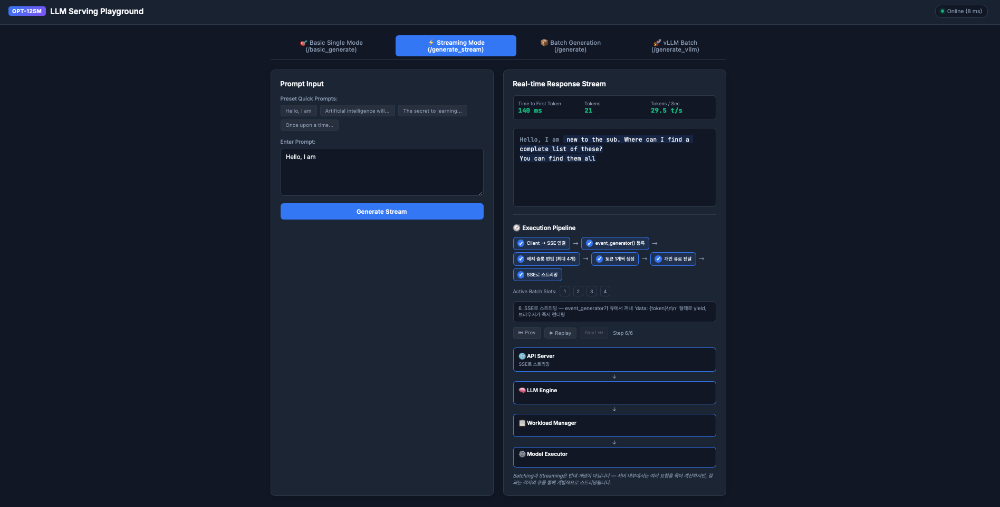
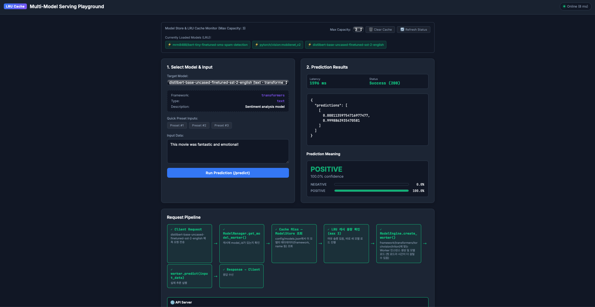

핵심 요약 (3줄)
- LLM 서빙은 "요청 접수(API) → 대기·배치 편성(스케줄러) → 실제 GPU 연산(엔진/워커)"이라는 3단
구조가 본질이며, 이 저장소의
single_model_llm_serving은 이를 직접 구현해 vLLM이 자동으로 해주는 연속 배칭·PagedAttention·KV 캐시를 "안 쓰면 어떻게 되는지"까지 보여주는 교육용 코드다. multi_model_serving은 여러 모델을 하나의 서비스로 묶을 때의 핵심 트레이드오프(즉시 로드 vs 캐시 적중률, LRU 축출)를 다루고, 에이전틱 서빙(KnowledgeAgent)은 요청 1건이 실제로는 플래닝→검색→생성 여러 번의 LLM 호출로 쪼개져 지연시간이 누적되는 서빙 요구사항을 만든다.- 오픈소스 스택(vLLM/SGLang/Ray Serve/KServe)과 클라우드 벤더(Bedrock/SageMaker JumpStart/DLC)는 "누가 운영 부담을 지느냐"의 스펙트럼이며, Build/Buy 손익분기 계산은 가격 종류(온디맨드 vs 배치, 입력 vs 출력 토큰)를 한 자리만 잘못 대입해도 결론이 10배 가까이 뒤집힐 수 있어 — 프로덕션 배포 전 반드시 공식 콘솔/가격표에서 재확인해야 한다(9번 섹션 참고).
통일 비유: 온라인 쇼핑몰 물류센터
이 문서 전체에서 LLM 서빙 시스템을 온라인 쇼핑몰의 물류센터(풀필먼트 센터)에 비유한다.
| 물류센터 | LLM 서빙 |
|---|---|
| 고객 주문 | 사용자의 프롬프트 요청 |
| 주문 접수 창구 (API 서버) | HTTP 요청을 받고 형식만 확인, 실제 포장(추론)은 하지 않음 |
| 집하장·대기열 (워크로드 매니저/스케줄러) | 들어온 주문을 모아 트럭(배치) 단위로 묶는 곳 |
| 포장 작업자 (모델 워커 / GPU) | 실제로 상품을 포장(추론 연산)하는 사람 |
| 재사용 가능한 포장재 재고 (KV 캐시) | 이미 계산해둔 부분을 다시 쓰면 처음부터 다시 계산할 필요가 없음 |
| 여러 상품군을 취급하는 창고 (멀티 모델 서빙) | 한 창고에서 여러 모델을 취급하되 선반(캐시) 공간은 한정적 |
| 여러 부서를 거치는 특수 주문 (에이전틱 서빙) | "검색 + 요약 + 분석"처럼 한 주문이 여러 단계를 순차로 거침 |
| 여러 회사가 입주한 대형 물류단지 (엔터프라이즈 서빙) | 입주사(테넌트)별 보안 구역·SLA·과금이 분리되어야 함 |
| 직접 창고를 짓기 vs 외주 물류대행사 | 오픈소스 스택 vs 클라우드 벤더 (Build or Buy) |
| 배송 시간 측정 | 첫 상품 포장 완료까지(TTFT), 이후 상품이 하나씩 나오는 간격(TPOT) |
1. 온보딩 — LLM 모델 서빙이란 무엇인가
"모델 서빙"은 학습이 끝난 모델을 실시간으로 주문받아 답을 내주는 물류센터를 운영하는 일이다.
노트북에서 model.generate() 한 줄을 실행하는 것과, 동시에 여러 사용자가 접속해도 안정적으로
응답하는 서비스를 운영하는 것은 완전히 다른 문제다 — 혼자 물건을 포장하는 것과 하루 수만 건의
주문을 처리하는 물류센터를 운영하는 것의 차이와 같다.
서빙 계층의 최소 책임은 인증/제한, 입력 검증, 라우팅, 큐잉, 배치, 모델 실행, 스트리밍, 관측성, 재시도·정리다. 모델 자체와 API 서버를 같은 것으로 보지 않아야 한다 — 모델은 포장 작업자이고, 서빙 시스템은 물류센터 전체다.
초보자 체크: "응답을 한 번에 받는가"와 "생성되는 즉시 토큰을 받는가(SSE 스트리밍)"는 사용자 경험과 측정해야 할 지표(9번 섹션)를 완전히 바꾼다.
이 저장소는 이 문제들을 실제로 겪어보게 만드는 실습 코드(llm-model-inference/ch03, ch04)로
구성되어 있으며, 아래 섹션에서 이론과 코드를 1:1로 매핑한다.
2. 단일 모델 서빙(Single-Model LLM Serving) 아키텍처
2.1 핵심 개념
- 정적 배칭(static batching): 요청을 모아 한 번에 처리하지만, 가장 긴 응답이 끝날 때까지 완료된 요청의 자리가 낭비된다.
- 연속 배칭(continuous / iteration-level batching): 매 디코딩 스텝 뒤 끝난 요청의 자리에 새 요청을 즉시 채운다 — 물류센터 비유로는 한 코스가 끝난 자리에 즉시 다음 주문을 배정하는 것.
- KV 캐시: 자동회귀 생성에서 이전 토큰들의 key/value 값을 저장해 재사용한다.
[참고] "KV 캐시로 연산량이 O(N²)→O(N)으로 감소한다"는 설명은 과단순화다. KV 캐시는 이전 토큰의 key/value 투사 재계산을 피해 스텝별 비용·메모리 접근을 줄이지만, 전체 생성 과정을 합산한 attention 총 연산량 자체는 각 스텝의 비용이 그때까지의 토큰 수에 비례하므로 여전히 시퀀스 길이에 대해 대략 O(N²)에 가깝다. 정확한 표현은 "KV 캐시는 재계산을 없애 스텝당 비용과 지연을 줄이지만, KV 캐시 자체의 메모리는 문맥 길이에 선형으로 증가한다"이다.
- PagedAttention (vLLM): KV 캐시를 고정 크기 블록으로 나누고 블록 테이블로 관리해 연속 메모리 예약의 낭비를 줄인다. 식재료를 손님별로 길게 늘어놓지 않고 같은 크기의 보관 상자에 나눠 담는 것과 같다. (vLLM 공식 문서)
2.2 실습 코드 매핑 (llm-model-inference/ch03/single_model_llm_serving/)
| 부품 | 파일 | 실행 위치 | 역할 |
|---|---|---|---|
| API server | main.py |
메인 프로세스 | 4개 엔드포인트(/basic_generate, /generate, /generate_stream, /generate_vllm) 노출, Depends(get_llm)로 LLMEngine 싱글턴 주입 |
| LLM engine | llm/llm.py |
메인 프로세스 | WorkloadManager/ModelExecutor 조율, facebook/opt-125m 하드코딩 로드, /generate_vllm용 별도 vLLM 인스턴스도 보유 |
| Workload manager | llm/workload_manager.py |
메인 프로세스 | 일반/스트리밍 큐·활성 목록 분리, batch_size = 4 하드코딩, get_next_batch()로 FIFO 슬롯 채움 |
| Model executor | llm/model_executor.py |
메인 프로세스 | multiprocessing.Queue 2개(task_queue, result_queue)로 워커 프로세스와 IPC |
| Model worker | llm/model_worker.py |
별도 프로세스(mp.Process) |
실제 forward pass 수행. 장애 격리 목적(모델 프로세스가 죽어도 API 프로세스는 생존) |
| Model manager | llm/model_manager.py |
워커 프로세스 | HF AutoModelForCausalLM/AutoTokenizer 로드 |
[정확한 동작] /generate_stream은 model.generate()가 아니라
self.model(input_ids=..., attention_mask=..., use_cache=False)로 raw forward pass를 한 번
호출해 다음 토큰 1개만 뽑고, 매 스텝 누적 프롬프트를 다시 토큰화한다. model.generate()는
비스트리밍 /generate, /basic_generate 경로에서만 쓰인다.
stream_states 딕셔너리는 선언만 되고 실제로 읽거나 쓰이지 않는다.
따라서 이 데모의 자체 스트리밍 루프는 "활성 슬롯에 새 요청을 채운다"는 점에서 연속 배칭의
축소판을 보여주지만, KV 캐시를 유지하거나 PagedAttention을 구현하지는 않는다. 실제 vLLM
경로(/generate_vllm)의 배칭 최적화와 이 자체 구현 루프를 같은 것으로 보면 안 된다.
추가로 확인된 세부 사항:
- model_manager.py는 model_cache 디렉터리를 os.makedirs()로 만들지만, from_pretrained()
호출에 cache_dir 인자로 전달하지 않아 실제로는 별도 로컬 캐시 경로로 쓰이지 않는다.
- model_worker.py는 self.device를 정하고 입력 텐서만 .to(self.device)로 옮기며, 모델
객체 자체에는 model.to(self.device)를 호출하지 않는다 — CUDA 환경에서 디바이스 불일치
위험이 있다.
아래는 위 4개 엔드포인트가 실제로 각각 어떤 순서로 컴포넌트를 거치는지 직접 재생해볼 수 있는 인터랙티브 애니메이션이다. 탭을 눌러 엔드포인트를 고르고 ▶ 재생 버튼으로 단계를 따라가 보자.
2.3 GPU 메모리 운영 원칙
가중치·활성화·KV 캐시·런타임 워크스페이스가 GPU 메모리를 공유한다. 운영 시에는 (1) 모델/정밀도로
가중치 예산을 먼저 잡고, (2) 최대 동시 시퀀스·최대 입출력 길이로 KV 예산을 제한하고, (3) 큐 길이와
요청별 상한으로 OOM 전파를 막고, (4) 취소/OOM 시 상태를 회수한다. 이 저장소에는 GPU 메모리 계정이나
gpu_memory_utilization 같은 세부 제어 로직이 없으며, vLLM 경로도 라이브러리 기본값에 의존한다 —
길이가 긴 한 요청이 모든 화구를 독점하지 않게 하는 것이 대형 단체 주문 제한과 같다.
3. 멀티 모델 서빙(Multi-Model Serving) 아키텍처
3.1 핵심 개념
단일 모델 창고가 한 상품군 전문 창고라면, 멀티 모델 서빙은 여러 상품군을 한 접수대에서 운영하는 일이다. 모든 모델을 메모리에 상주시키면 비용이 크고, 매번 새로 로드하면 지연이 크다 — 온디맨드 로딩 + LRU 캐시가 이 사이의 절충안이다.
3.2 실습 코드 매핑 (llm-model-inference/ch03/multi_model_serving/)
POST /predict {model_id, input_data}는 ModelManager.get_model_worker(model_id)를 호출한다:
self.model_cache(OrderedDict)에 있으면move_to_end()로 LRU 갱신 (캐시 히트)- 없으면
ModelStore.get_model(model_id)로 메타데이터 조회 (config/models.json, 등록 모델 4종: 감성분석 DistilBERT, 스팸탐지 BERT-tiny, MobileNet V2, Tritondensenet_onnx) - 캐시가
max_models(기본 2) 이상 차 있으면popitem(last=False)(최오래 미사용 제거) +engine.delete_worker() ModelEngine.create_worker(metadata)가framework값(transformers/torchvision/triton)에 따라TransformerWorker/TorchVisionWorker/TritonWorker생성
리소스 격리 트레이드오프: TransformerWorker/TorchVisionWorker는 API 서버와 동일
프로세스에서 실행되며 GPU 디바이스 지정 코드가 없다(CPU 기본 실행으로 추정). 반면
TritonWorker는 별도 Triton 서버 프로세스로 완전히 격리되어 HTTP로 통신한다(tritonclient.http).
이는 "비용 최적화(공유 인스턴스, 온디맨드 로딩)"와 "지연 최적화(전용 인스턴스, 격리)"의 실제
예시다. TritonWorker가 하드코딩한 주소는 0.0.0.0:8009, output 이름은 fc6_1이며, 저장소의
config.pbtxt는 max_batch_size: 0이라 이 예제를 "배치 최적화 예제"로 부르면 안 된다.
놓치기 쉬운 뉘앙스: FastAPI의 async def /predict 핸들러가 동기 worker.predict()를 직접
호출하므로, CPU 추론 중 이벤트 루프가 블록될 수 있다. "FastAPI라서 자동으로 비동기 처리된다"고
해석하면 안 된다. 모델 다운로드 코드는 manager.py에 주석 처리되어 있어 실제로 수행되지 않는다.
아래는 실제 등록된 4개 모델 중 하나를 클릭해서 ModelManager의 LRU 캐시가 히트/미스/축출을
어떻게 처리하는지 직접 눌러볼 수 있는 인터랙티브 애니메이션이다. 같은 모델을 두 번 누르면
캐시 히트를, 캐시 용량(기본 2)을 넘겨 새 모델을 누르면 LRU 축출을 확인할 수 있다.
4. 에이전틱 시스템에서의 모델 서빙
4.1 왜 다른가
에이전트의 "한 사용자 질문"은 모델 호출 한 번이 아니다. 계획 → 검색(임베딩) → 생성 → 요약/분석처럼 여러 번 왕복하며, 각 단계가 순차 동기 실행되어 개별 호출의 지연시간이 누적된다(tail latency amplification). 물류센터 비유로는 한 주문이 "선물 포장 + 견적서 작성 + 재고 확인"처럼 여러 부서를 거치는 특수 주문이 되는 셈이다.
4.2 실습 코드 매핑 (llm-model-inference/ch04/KnowledgeAgent/)
Agent.process_query()는 다음 순서로 동작한다.
Planner.create_plan(query)— 네이티브 tool-calling API가 아니라 LLM에게 자연어 프롬프트로 JSON 계획을 요청한다. 허용 액션은 정확히 4개:query_rag_with_context,generate_profile_based_response,generate_summary,generate_analysis. JSON 파싱 실패/호출 예외 시 키워드 규칙 기반 fallback plan을 만든다._execute_action_sequence()— 액션을 순차(for 루프) 동기 실행하며, 이전 결과가 50자를 넘으면 다음 액션의context로 전달한다(컨텍스트 체이닝).RAGSystem—knowledge_files/*.pdf를PyPDF2로 읽고tiktoken기준 1,000 토큰 청크/200 토큰 겹침으로 분할,text-embedding-3-small로 임베딩한 뒤 순수 인메모리 리스트 + NumPy 코사인 유사도 브루트포스(O(n))로 top-k를 찾는다. 벡터 DB(FAISS/Chroma) 없음, 디스크 영속화 함수는 주석 처리되어 매 실행마다 재계산이 필요하다.LLMManager는 OpenAI Chat Completions API만 호출한다(로컬 모델/Anthropic 연동 없음). 대화 히스토리 누적이 없어 매 질의가 무상태(stateless)로 처리된다.
[정정]
config.py의 실제 기본LLM_MODEL은gpt-4.1-nano이며,README.md와env_example.txt에는 오래된gpt-4표기가 그대로 남아 있다. 임베딩(text-embedding-3-small)과 채팅(gpt-4.1-nano)이 별도 엔드포인트로 분리되어 있고, 플래닝 호출은temperature=0.3, 일반 응답은0.7을 쓴다 — 서빙 계층이 요청별 파라미터를 지원해야 하는 이유다.또한 "질문마다 반드시 검색→요약→분석을 거친다"는 식으로 고정 흐름처럼 서술하면 부정확하다 — 계획은 매 요청 동적으로 LLM이 선택한다. RAG(검색 후 프롬프트에 삽입)와 CAG(문서를 KV 캐시에 미리 상주)는 실존하는 서로 다른 개념이지만, 이 저장소는 RAG만 구현하며 CAG는 없다.
example_usage.py의example_save_load_knowledge_base()는Agent클래스에 없는save_knowledge_base/load_knowledge_base메서드를 호출하므로, 실제 실행 시AttributeError가 날 가능성이 높다(정적 분석 기준, "확인 필요"로 표기).
5. 엔터프라이즈 환경에서의 LLM 서빙
여러 회사가 입주한 대형 물류단지처럼, 엔터프라이즈 서빙은 각 입주사(테넌트)의 화물이 섞이지 않게 구역을 나누고, 반입 검수(인증/과금)와 배송 SLA를 계층별로 분리해야 한다.
필수 체크리스트 (특정 표준을 인용한 것이 아니라 실무적으로 정리한 참고 항목이다):
- 보안: 전송/저장 암호화, secret manager, 최소 권한 IAM/RBAC, API 키 회전, 프롬프트/첨부의 데이터 분류·보존·삭제 정책
- 컴플라이언스: 감사 가능한 접근·모델 버전·프롬프트/응답 처리 기록, 로그 마스킹
- 멀티테넌시: 인증 경계에서 신뢰할 수 있는 테넌트 ID 주입, rate limit·토큰 예산·큐·GPU 격리 수준 결정
- SLA/SLO: 가용성뿐 아니라 TTFT p95/p99, 완료율, 스트림 중단율, 툴 호출 성공률, 비용 상한
- 안전성: 프롬프트 인젝션을 권한 상승으로 취급하고, 도구별 인자 검증·allowlist·사람 승인을 둔다
이 저장소의 multi_model_serving은 이 요구사항 중 "모델 선택/라우팅"과 "캐시를 통한 자원
재사용"의 축소판 실습이며, 실제 보안·컴플라이언스·멀티테넌시 구현은 로컬 코드 범위 밖이다.
6. 오픈소스 스택으로 구축하기
직접 창고를 짓는 선택이다. 제어력과 이식성은 높지만 보안 패치·용량계획·장애 대응도 팀 책임이다.
- vLLM: PagedAttention 기반 KV 관리와 연속 배칭이 핵심이며, 로컬 예제의
/generate_vllm이 이를 호출한다. 최신 특징으로 chunked prefill이 있는데, 이는 "TTFT 스파이크를 억제한다"기보다 프롬프트 prefill 연산을 청크로 나눠 decode 사이에 끼워 넣음으로써 큰 prefill이 다른 요청의 decode를 막는 head-of-line blocking을 완화해 ITL(토큰 간 지연)을 개선하는 스케줄링 기법으로 이해하는 것이 공식 문서 프레이밍에 더 가깝다. 그 외 disaggregated prefill/decode,torch.compile기반 커널 생성도 최근 강조되는 특징이다. (vLLM PagedAttention) - SGLang: RadixAttention으로 KV 캐시를 라딕스 트리 구조로 관리해 공유 프리픽스(시스템
프롬프트, 멀티턴 히스토리)를 재사용한다. speculative decoding(MTP 기반 등)도 지원한다.
[참고] 흔히 인용되는 "RadixAttention으로 TTFT 20~40% 감소"라는 구체적 수치는 SGLang 공식 문서/블로그에서 근거를 찾을 수 없다 — 공식 자료가 실제로 내세우는 대표 수치는 "처리량 기준 최대 5배"다. 근거 없는 %는 이 문서에서 채택하지 않는다. (SGLang speculative decoding)
- TensorRT-LLM: NVIDIA GPU 전용 최적화 런타임, speculative sampling 공식 문서가 존재한다. CUDA/NVIDIA 의존성을 배포 전 확인해야 한다. 이번 조사에서 최신 문서와의 1:1 대조까지는 하지 못했다 — 확인 필요로 남긴다. (TensorRT-LLM)
- Speculative decoding (EAGLE-3 / DFlash): 메모리 대역폭이 병목인 decode 단계를 완화하기 위해
경량 draft 모델이 여러 후보 토큰을 제안하고 target 모델이 한 번의 forward pass로 검증하는
기법이다(둘 다 실존 기법, DFlash는 NVIDIA가 발표한 block-diffusion 기반 draft 기법).
[참고] 일부 자료에 등장하는 "H200 환경에서 최대 2~3.5배"는 부정확하다. NVIDIA 공식 발표의 대표 수치는 Blackwell(B200/B300) 환경에서 최대 15배이며, H200이 아니라 Blackwell 세대가 핵심 하드웨어다. speculative decoding은 초안 품질·검증 비용·워크로드에 따라 효과가 달라지며 항상 속도가 향상되는 것은 아니다.
- Ray Serve + KubeRay:
@serve.deployment(num_replicas=..., ray_actor_options={"num_gpus":1})로 레플리카·GPU를 배정하고,@serve.multiplexed(max_num_models_per_replica=2)가 HTTP 헤더 기반으로 멀티 모델을 라우팅한다 — 이는multi_model_serving의 수동ModelManagerLRU가 하는 일을 프레임워크 차원에서 대체하는 정확한 대응 관계다. KubeRay Operator는 4개 CRD (RayCluster/RayJob/RayService/RayCronJob)로 K8s 리소스를 관리하며, 프로덕션에는 무중단 업데이트·헬스체크 복구를 지원하는 RayService가 권장된다. (Ray Serve on Kubernetes) - KServe: Kubernetes의 모델 서빙 control/data plane을 제공하며 2025-09-29 CNCF Incubating
프로젝트로 편입되었다(현재 안정 버전 계열 0.20대). vLLM/llm-d를 고성능 백엔드로 지원하고
OpenAI 호환 API, Hugging Face 모델 네이티브 지정(
storageUri: hf://...)을 제공한다.[참고] "Knative/Istio 기반 오토스케일링(Scale-to-Zero)을 지원한다"는 서술은 맞지만, 이것이 유일한 배포 모드라는 인상은 부정확하다. KServe는 RawDeployment 모드도 지원하며, 이 모드는 표준 Kubernetes Deployment/HPA만으로 동작해 Istio/Knative 의존성이 없다. 설치 전 목표 배포판의 Quickstart와 CRD 버전을 확인해야 한다. (KServe architecture)
선택 기준: 단일 고처리량 LLM은 vLLM/SGLang/TensorRT-LLM 계열 검증에서 시작하고, 다단계 Python 서비스·모델 조합은 Ray Serve가 맞을 수 있다. Kubernetes 표준 리소스·여러 런타임 운영에는 KServe가 후보가 된다. 실제 모델/하드웨어/운영팀 기준으로 PoC에서 TTFT·TPOT·장애 복구를 비교해야 한다.
7. 클라우드 벤더로 구축하기
설비와 일부 운영을 임대하는 외주 물류대행사 방식이다. 빠른 시작·보안 통합·운영 부담 감소가 장점이고, 제공 리전/모델/할당량·벤더 종속성·단가가 제약이다.
노트북에서 확인한 사실
- Bedrock (
aws_bedrock_examples.ipynb):boto3의bedrock-runtime클라이언트(us-west-2)와client.converse()로us.anthropic.claude-3-5-sonnet-20240620-v1:0을 호출한다. 인증은AWS_BEARER_TOKEN_BEDROCK환경변수로 처리하고 자격 증명을 코드에 하드코딩하지 않는다. - DLC/LMI (
aws_dlc_serving.ipynb): PyTorch 2.0.1 이미지 +torch-model-archiver예,DJLModel에 Llama 3.1 8B Instruct·tensor parallel 4·rolling batch 128을 설정하는 예를 담는다.[참고] 노트북이 vLLM 백엔드 선택에 쓰는 환경변수
OPTION_SERVING_LOADER=vllm은 현재 DJL Serving 공식 문서에 존재하지 않는 키다. vLLM 백엔드를 선택하는 정확한 현재 키는OPTION_ROLLING_BATCH=vllm(serving.properties에서는option.rolling_batch=vllm)이다.OPTION_TENSOR_PARALLEL_DEGREE는 실재하는 키로 확인됐다. 노트북 값 자체가 틀린 것이 아니라, 작성 시점 이후 설정 키 체계가 바뀌었을 가능성이 높으므로 실제 배포 전 공식 DJL/LMI vLLM 가이드로 재확인해야 한다. - DLC 커스터마이징 (
aws_dlc_serving_customization.ipynb):serving.properties,requirements.txt, DJL Pythonmodel.py(initialize/handle)를 tar.gz로 묶어 S3에 올리고djl-deepspeed:0.25.0이미지로 endpoint를 만드는 예다. 노트북 자체가 "셋업 코드가 생략된 pseudo code"임을 명시하며,!rm -rf·%%writefile같은 Colab 매직과 미정의 변수가 있어 그대로 로컬 실행되지 않는다.[참고]
djl-deepspeed라는 프레임워크 이름은 2026년 8월 기준 AWS 공식 DLC 문서에서 더 이상 대표 이름으로 확인되지 않는다. 현재는djl-inference(DJLServing) 단일 리포지토리 아래 0.36 계열로 통합되어 있고, 이미지 태그에lmi28.0.0처럼 LMI/vLLM 버전이 함께 표기되며 vLLM이 LMI의 기본 백엔드다. 배포 전image_uris.retrieve()로 현재 유효한 framework 이름을 다시 조회해야 한다. - JumpStart (
aws_jumpstart.ipynb):JumpStartModel(model_id="huggingface-llm-mistral-7b-instruct", model_version="*")을ml.g5.2xlarge에 배포하는 예다.model_version="*"은 실행 시점의 최신 버전을 뜻하므로 재현성에는 고정 버전이 더 적절하다. 추론 호출(predictor.predict()) 코드는 노트북에 없다(배포까지만 다룸).
[가격/모델 목록에 대한 공통 주의] 정확한 지원 모델 목록·가격은 이 보고서에 고정 나열하지 않는다.
us.anthropic.claude-3-5-sonnet-20240620-v1:0이 Bedrock의 주요 모델 카탈로그에서 이미 빠져 있고 "Public Extended Access" 요금제로만 유지되고 있을 가능성이 있어(배포 전 재확인 권장), 노트북의 model ID를 "현재도 지원됨"으로 가정하면 안 된다. 공식 Bedrock 지원 모델과 Bedrock 가격에서 배포 직전 반드시 재확인한다(가격 수치는 8번 섹션 예시 참고).
8. Build or Buy 의사결정 프레임워크
직접 창고를 지을지, 위탁 물류대행사를 쓸지의 문제다. "항상 직접 구축이 싸다"거나 "항상 관리형이 낫다"는 결론은 없다.
| 기준 | 자체 구축(Build) | 관리형/구매(Buy) |
|---|---|---|
| 차별화 | 맞춤 모델, 특수 하드웨어, 데이터 경계가 핵심일 때 | 범용 모델과 빠른 기능 출시가 핵심일 때 |
| 비용 | 높은 고정 운영비, 높고 안정적인 사용률에서 유리 | 낮은 초기비용, 변동 수요/소규모에 유리 |
| 운영 | 패치·capacity·보안·온콜 직접 책임 | 플랫폼 제약 내에서 운영 부담 감소 |
| 리스크 | 인력 의존·장애 대응 | 공급자/모델 변경·가격 변동 |
8.1 손익분기 처리량(Break-Even Throughput) 공식
시간당 전용 인스턴스 비용을 C_hr, 1M 토큰당 API 단가를 P라 하면:
$$\text{Break-Even Throughput (tokens/sec)} = \frac{C_{hr}}{P} \times \frac{10^6}{3600}$$
이 공식 자체는 수학적으로 단순하지만, 이 공식에 어떤 숫자를 대입하느냐에 따라 결론이 완전히 달라질 수 있다 — 실제로 흔히 발생하는 오류 사례를 예시로 보여준다.
[대입값 민감도 사례] 예를 들어
ml.g5.2xlarge≈ $1.212/hr, Claude 3.5 Sonnet ≈ $3.00/1M tokens를 대입하면 ≈112.22 tokens/sec이 손익분기점으로 계산된다. 그러나 공식 Bedrock 가격표를 확인해 보면 이 계산에는 두 가지 문제가 있다.
- 가격 종류 오류:
$3.00/1M은 Claude 3.5 Sonnet의 온디맨드가가 아니라 배치(batch) 추론의 입력(input) 토큰 가격이다. 실제 온디맨드 가격은 입력 $6.00/1M, 출력 $30.00/1M이며, 배치는 온디맨드의 정확히 절반(입력 $3.00/1M, 출력 $15.00/1M)이다. "처리량 (tokens/sec)"은 보통 출력 토큰 생성 속도를 의미하므로 비교에 써야 할 값은 온디맨드 출력가 $30/1M이다.- 인스턴스 가격 종류 확인 필요:
$1.212/hr는g5.2xlargeEC2 온디맨드가로는 맞지만, SageMaker의 관리형 엔드포인트ml.g5.2xlarge는 통상 순수 EC2보다 비싸므로 실제 배포 비용은 이보다 높을 수 있다.올바른 값(온디맨드 출력가 $30/1M)으로 다시 계산하면:
$$T = \frac{1.212}{30} \times \frac{10^6}{3600} \approx 11.2 \text{ tokens/sec}$$
즉 잘못된 값을 대입하면 112.22였던 손익분기점이, 올바른 값으로는 약 11.2 tokens/sec (약 10분의 1)로 바뀌며 훨씬 낮은 지속 처리량에서도 자체 구축이 재무적으로 유리해진다는 정반대에 가까운 결론이 나온다.
교훈: 손익분기 계산에 쓸 가격은 반드시 (a) 온디맨드/배치 여부, (b) 입력/출력 토큰 여부, (c) EC2 vs 관리형 엔드포인트 여부, (d) 비교 대상 모델을 명시해야 한다. 구체적 숫자를 못박기보다는 실제 PoC로 직접 측정해 검증하는 편이 더 안전하다.
판단은 최소 4주 이상의 대표 트래픽으로 TTFT/TPOT, 실패율, GPU/인스턴스 이용률, 엔지니어링·온콜 비용을 함께 측정해 TCO와 SLO로 비교해야 한다. 하이브리드(민감/대량 작업은 자체, 범용/변동 작업은 관리형)도 유효한 선택이다.
9. 성능 측정 (Measuring Performance in LLM Serving)
첫 상품이 언제 포장 완료되어 나오는지와, 그 뒤 상품이 얼마나 일정하게 나오는지는 다르다. 평균 지연시간 하나만 보면 이 차이를 잃는다.
| 지표 | 정의 | 실무 주의점 |
|---|---|---|
| TTFT (Time To First Token) | 요청 도착부터 첫 생성 토큰까지 (Prefill 단계 대응) | 네트워크·큐잉·prefill·첫 전송 포함 여부를 명시. 스트림이 아닌 API는 first byte와 구분 |
| TPOT / ITL (Time Per Output Token / Inter-Token Latency) | 첫 토큰 이후 연속 출력 토큰 간 시간, 보통 (완료 시각−첫 토큰 시각)/(출력 토큰 수−1)의 평균 |
TPOT은 평균값, ITL은 개별 구간 관측치 — 동의어처럼 쓰지 않는다. 출력 1토큰 요청은 정의 불가하므로 제외/별도 표기 |
| E2E latency | TTFT + TPOT × (N-1) (N = 총 출력 토큰 수) |
ITL이 평균이고 N이 출력 토큰 수일 때만 성립하는 항등식 |
| Throughput | RPS(초당 완료 요청 수) 또는 TPS(초당 생성 토큰 수) | 입력을 짧게 자르거나 배치를 잘 짜면 TPS는 인위적으로 부풀려질 수 있다 — TTFT와 반드시 병행 측정 |
| p50/p95/p99 | 지연의 분위수 | 평균이 아닌 tail latency를 SLO에 사용 |
유스케이스별 우선순위가 다르다: 에이전틱 워크플로우는 여러 번 왕복하므로 E2E가 중요하고, 챗봇은 첫 반응 체감이 큰 TTFT가 중요하며, 긴 출력(코드 생성 등)은 TPOT/ITL이 중요하다. 성능 측정 모범 사례로는 지연/처리량 트레이드오프 파악, 지표 분해 측정, 실제 트래픽 패턴 시뮬레이션, 한 번에 하나씩 변경, GPU 활용률 모니터링, 지속적 재테스트가 꼽힌다.
10. 웹 검색으로 보강한 최신성 점검 (요약표)
| 영역 | 판정 | 근거 |
|---|---|---|
| vLLM (PagedAttention/연속 배칭/chunked prefill/speculative decoding) | 개념 확인됨, 로컬 구현과 동일시하면 부정확 | vLLM — 로컬 자체 스트리밍은 use_cache=False로 KV 캐시 미구현 |
| SGLang (RadixAttention) | 개념 확인됨, 구체적 %(TTFT 20-40%)는 근거 없음 — 삭제 | SGLang |
| TensorRT-LLM | 문서 존재 확인, 최신 버전 1:1 대조는 확인 필요 | TensorRT-LLM |
| Speculative decoding (EAGLE-3/DFlash) | 기법 실존, "H200 2-3.5배"는 부정확 → 대표 수치는 Blackwell 최대 15배 | NVIDIA 공식 발표 |
| Ray Serve / KubeRay | API(@serve.deployment, @serve.multiplexed) 확인됨 |
Ray Serve on K8s |
| KServe | CNCF Incubating(2025-09-29) 편입 확인, RawDeployment 모드 존재(Istio/Knative 필수 아님) | KServe |
| AWS DJL/LMI | djl-deepspeed→djl-inference(0.36계열) 재편 확인. OPTION_SERVING_LOADER는 존재하지 않는 키, 정확한 키는 OPTION_ROLLING_BATCH |
공식 DJL vLLM 가이드 |
| AWS Bedrock (Claude 3.5 Sonnet 가격) | 온디맨드 입력 $6/출력 $30, 배치는 정확히 절반(입력 $3/출력 $15) — 배치가를 온디맨드로 오인하기 쉬움 | 공식 Bedrock 가격 |
| TTFT/TPOT 정의 | 업계 표준과 개념적으로 일치, 측정 경계(네트워크 포함 여부 등) 명시 필요 | 공식 문서 확인 |
참고 웹 CH3 정리, CH4 정리도 확인했다. 두 글의 구성(코드 파일 중심의 단일/멀티 모델 흐름, 에이전트 왕복·RAG·성능 측정)은 본 가이드의 구성과 대응하지만, 본문의 기술 판단은 블로그 요약보다 실제 로컬 소스와 위 공식 문서를 우선했다.
11. 핸즈온 가이드 — 실제 파일 기준
아래 명령은 각 README/노트북에 실제 기재된 내용을 근거로 했으며, 확인하지 않은 부분은 "확인 필요"로 표기했다. 실행 전 모델 다운로드, AWS 권한/비용, OpenAI API 비용이 발생할 수 있다.
11.1 ch03/single_model_llm_serving
실습 링크: https://github.com/gylee815/llm-model-inference/tree/main/ch03/single_model_llm_serving 를 통해 실습할 수 있다.

사전 준비: Python 가상환경 + requirements.txt(FastAPI, Transformers, PyTorch 등). macOS
Apple Silicon은 README에 따라 Python 3.9–3.12, Xcode CLI, vLLM v0.8.3 소스 빌드가 필요할 수
있다(git clone --depth 1 --branch v0.8.3 ..., pip install --no-build-isolation -e .build/vllm).
사용 모델(facebook/opt-125m)은 코드에 하드코딩되어 있다.
cd llm-model-inference/ch03/single_model_llm_serving
python3 -m venv venv && source venv/bin/activate
pip install -r requirements.txt
python3 main.py
# macOS 네트워크 바인딩 이슈 시:
VLLM_HOST_IP=127.0.0.1 python3 main.py
예상 결과: http://localhost:8080에서 4개 엔드포인트 확인.
curl -X POST http://localhost:8080/generate \
-H "Content-Type: application/json" -d '{"prompts": ["Hello, I am"]}'
curl -N -X POST http://localhost:8080/generate_stream \
-H "Content-Type: application/json" -d '{"prompt": "Hello, I am"}'
테스트: pytest tests/ -v 또는 tests/test_stream.sh.
흔한 오류: macOS에서 pip install vllm이 torch==2.6.0/Python 3.13+ 비호환으로 실패하면
README의 Python 3.11 소스 빌드 절차를 따른다. vLLM 없이 동작하는 "Transformers CPU 폴백
모드"는 존재하지 않는다 — llm/llm.py가 from vllm import LLM as VLLM을 조건 없이 최상단에서
import하므로, vLLM 미설치 시 서버 자체가 기동하지 않는다. GPU OOM은 프롬프트·동시성·토큰 상한을
줄여 대응한다.
11.2 ch03/multi_model_serving
실습 링크: https://github.com/gylee815/llm-model-inference/tree/main/ch03/multi_model_serving 를 통해 실습할 수 있다.

사전 준비: requirements.txt(FastAPI, torch/torchvision, Transformers, tritonclient[http],
Pillow).
cd llm-model-inference/ch03/multi_model_serving
python3 -m venv venv && source venv/bin/activate
pip install -r requirements.txt
python3 -m app.server
curl http://localhost:8001/models
예상 결과: 포트 8001에서 UI/API. 최초 /predict는 해당 워커를 적재하며, 기본 캐시가 2이므로
세 번째 서로 다른 모델을 요청하면 LRU가 축출된다.
curl -X POST http://localhost:8001/predict \
-H "Content-Type: application/json" \
-d '{"model_id": "550e8400-e29b-41d4-a716-446655440000", "input_data": "This movie was great!"}'
선택 Triton 경로:
docker run -p8009:8000 -p8010:8001 -p8011:8002 \
-v $(pwd)/model_dir:/models \
nvcr.io/nvidia/tritonserver:24.12-py3 \
tritonserver --model-repository=/models --model-control-mode=explicit
테스트: python3 -m unittest tests/test_models.py(LRU 용량 포함), tests/test_triton_densenet.py.
흔한 오류: Triton 미기동 시 Triton 경로만 실패한다(나머지 모델은 정상). cache miss의 첫 요청
지연은 정상 동작이며 /models로 확인한다.
11.3 ch04/KnowledgeAgent
사전 준비: Python 3.8+, OpenAI API 키, PDF 파일.
cd llm-model-inference/ch04/KnowledgeAgent
python -m venv venv && source venv/bin/activate
pip install -r requirements.txt
cp env_example.txt .env # .env에 OPENAI_API_KEY 설정 (README의 gpt-4 표기는 오래됨, 실제 기본값은 config.py의 gpt-4.1-nano)
cp /path/to/*.pdf knowledge_files/
python agent.py
예상 결과: 시작 시 PDF를 청크화·임베딩해 메모리에 적재하고 대화형 프롬프트가 열린다. quit으로
종료. 벡터 DB 영속화가 비활성화되어 있어 재시작 시 다시 구축한다.
흔한 오류: OPENAI_API_KEY 미설정 시 초기화 오류. PDF가 없거나 텍스트 추출 실패 시 액션
전제조건(문서 1개 이상)을 만족하지 못한다. example_usage.py의
example_save_load_knowledge_base()는 Agent에 없는 메서드를 호출하므로 AttributeError가 날
가능성이 높다(확인 필요).
11.4 AWS 노트북 4종
| 노트북 | 사전 준비 | 핵심 호출 | 비고 |
|---|---|---|---|
bedrock/aws_bedrock_examples.ipynb |
boto3, AWS_BEARER_TOKEN_BEDROCK |
client.converse(modelId=..., messages=...) |
실행 출력이 노트북에 남아 있음(직접 실행 검증됨) |
dlc/aws_dlc_serving.ipynb |
S3, IAM role, HF 토큰 (pseudo code 명시) | torch-model-archiver 또는 DJLModel(env={"OPTION_ROLLING_BATCH":"vllm", ...})(원 노트북은 OPTION_SERVING_LOADER 사용 — 위 7/10번 정정 참고) |
실제 실행 출력 없음, "확인 필요" |
dlc_customization/...ipynb |
SageMaker session/role, S3 (pseudo code 명시) | image_uris.retrieve(framework=...) (현재는 djl-inference 계열 확인 필요) → model.py 커스텀 handler |
!rm -rf/%%writefile 매직 존재, 그대로 실행 불가 |
jumpstart/aws_jumpstart.ipynb |
AWS 자격증명, SageMaker role | JumpStartModel(model_id="huggingface-llm-mistral-7b-instruct").deploy(...) |
배포까지만, 추론 호출 코드 없음 |
공통 흔한 오류: IAM role에 모델 접근 권한이 없으면 AccessDeniedException, ml.g5.* 쿼터
부족 시 배포 실패. 비용 발생 방지를 위해 사용 후 endpoint 삭제.
12. 전체 통합 학습 순서
물류센터 비유의 순서로는 "접수대 하나 → 여러 상품군/선반 → 여러 부서를 거치는 주문 → 지점 운영과 손익"이다.
권장 실습 순서:
- 단일 데모에서
/generate와/generate_stream을 각각 호출해 TTFT/완료 시간을 분리 기록한다. - 멀티 모델 데모에서 서로 다른 세 모델을 순서대로 요청해
/models의 LRU 변경을 관찰한다. - KnowledgeAgent에서 청크/중첩 크기, 계획 사용 여부, API 호출 횟수·비용을 비교한다.
- 동일한 대표 프롬프트·동시성·warm 상태로 runtime/관리형 후보를 비교하고 평균이 아닌 p95/p99와 실패율을 남긴다.
- 실제 배포 전 모델 ID·리전·가격·런타임 버전·보안 정책을 공식 문서와 계정 콘솔에서 재승인한다 (8번 섹션의 10배 차이 사례를 교훈 삼는다).
[핵심 사실 확인 요약]
| 확인 항목 | 결과 | 근거 |
|---|---|---|
| vLLM/SGLang/TensorRT-LLM의 continuous batching, PagedAttention, speculative decoding 설명이 현재 공식 문서와 일치하는가 | 개념은 확인됨, 로컬 구현과의 동일시 및 일부 구체적 수치는 부정확 | vLLM PagedAttention·SGLang speculative decoding·TensorRT-LLM speculative sampling 공식 문서를 확인했다. 로컬 model_worker.py의 스트리밍은 use_cache=False 재토큰화 방식이라 KV 캐시/PagedAttention 구현이 아니다. SGLang "TTFT 20-40%", EAGLE-3/DFlash "H200 2-3.5배"라는 구체적 수치는 근거를 찾지 못해 기각/정정했다(10번 섹션). |
| Ray Serve on K8s, KServe 등 오픈소스 스택의 버전/아키텍처가 최신 기준으로 달라졌는가 | 확인됨(변경 있음) | KServe는 2025-09-29 CNCF Incubating으로 편입되었고 RawDeployment(Istio/Knative 불필요) 모드도 지원한다. Ray Serve의 @serve.multiplexed 등 API는 공식 문서와 일치했다. 로컬 저장소에는 Ray/KServe manifest가 없어 실제 실행 검증은 범위 밖이다. |
| AWS Bedrock/SageMaker JumpStart/DLC의 서비스명·지원 모델·가격이 노트북 작성 시점과 달라졌는가 | 부정확함(정정 완료) | DLC의 djl-deepspeed는 djl-inference(0.36계열, vLLM 기본 백엔드)로 재편됐고, 노트북이 쓴 OPTION_SERVING_LOADER는 존재하지 않는 키이며 정확한 키는 OPTION_ROLLING_BATCH다. Bedrock 가격도 온디맨드($6/$30 입출력)와 배치($3/$15, 온디맨드의 절반)를 혼동하면 안 되며, 이 착오가 8번 섹션의 손익분기 계산을 10배 가까이 왜곡시킬 수 있다. Claude 3.5 Sonnet(20240620) 모델 ID가 주요 카탈로그에서 빠졌을 가능성도 있어(재확인 권장) 노트북 값을 "현재도 유효"로 가정하지 않는다. |
| TTFT/TPOT 등 성능 지표 정의가 업계 표준과 일치하는가 | 확인됨(측정 경계 명시 필요) | TTFT=요청 시작~첫 토큰, TPOT/ITL=이후 토큰 간 평균 시간, E2E = TTFT + TPOT × (N-1) 정의는 업계 통념과 일치한다. 다만 TPOT(평균)과 ITL(개별 구간)을 동의어처럼 쓰지 않아야 하고, 네트워크 포함 여부·1토큰 예외 등 측정 경계를 명시해야 비교가 유효하다. |
참고 자료
- 로컬 소스:
llm-model-inference/ch03/single_model_llm_serving/,llm-model-inference/ch03/multi_model_serving/,llm-model-inference/ch04/KnowledgeAgent/의 Python 소스·README·requirements·models.json, AWS 노트북 4종. - 참고 웹: CH3 정리, CH4 정리
- 공식 문서: vLLM, SGLang, TensorRT-LLM, Ray Serve, KServe, Bedrock 지원 모델, Bedrock 가격, DJL/LMI vLLM 가이드